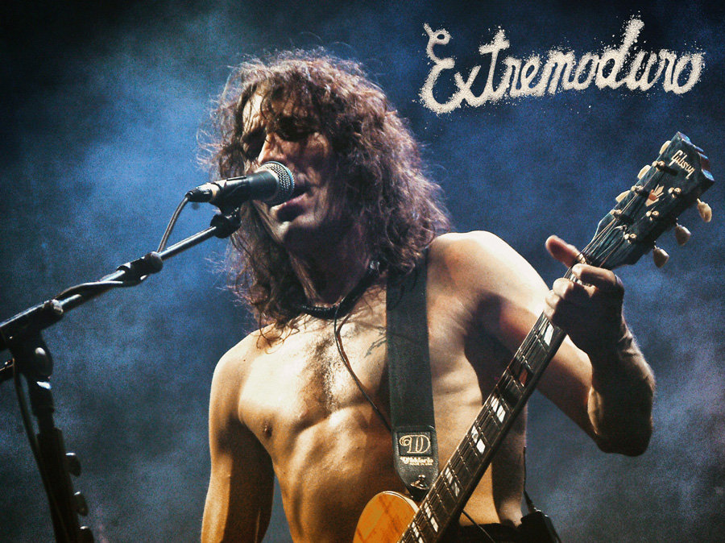

| Categoría | Detalle |
|---|---|
| Años activo | 1987-2019 (y reuniones) |
| Género | Rock, Hard Rock |
| Miembros | Roberto Iniesta, Iñaki Antón «Uoho», José Ignacio Cantera, Miguel Colino |
| Álbum más vendido | La ley Innata (Disco de Oro) |
| Premios | Premios de la Música: Mejor vídeo musical. |
Extremoduro es mi banda favorita porque es auténtica, emocional y ha dejado una huella imborrable en la música española. Sus letras profundas y su estilo único me han acompañado en momentos importantes de mi vida, convirtiéndose en una fuente de inspiración y consuelo. Cada álbum es una obra maestra que refleja la pasión y el talento de sus miembros, especialmente de Roberto Iniesta, cuyo carisma y voz inconfundible hacen que cada canción sea una experiencia inolvidable.